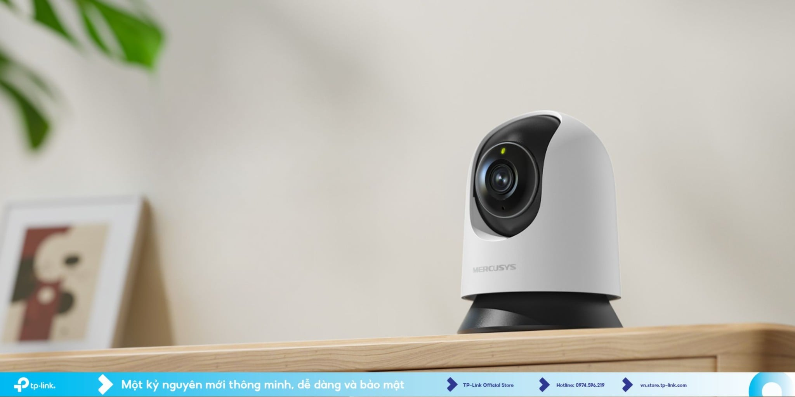

Chào mọi người! Hôm nay NetStore sẽ hướng dẫn các bạn cách thiết lập và sử dụng chiếc camera Mercusys từ A đến Z nhé. Nhiều bạn mới mua về hay lúng túng ở bước kết nối, nhưng thực ra nó cực kỳ dễ luôn, chỉ tốn vài phút là xong.

Bước 1: Tải app và cắm điện
Đầu tiên, bạn cứ cắm điện cho camera khởi động cái đã. Đợi đèn LED chớp nháy là nó đã sẵn sàng. Sau đó, bạn lấy điện thoại ra, vào App Store hoặc CH Play tải ngay ứng dụng Mercusys về máy. Tạo một tài khoản bằng email của bạn rồi đăng nhập vào.
Bước 2: Kết nối camera với Wi-Fi nhà bạn
Trong app, bạn bấm vào dấu "+" ở góc phải màn hình để thêm thiết bị. App sẽ hướng dẫn bạn từng bước: quét mã QR dưới đáy camera, sau đó nhập mật khẩu Wi-Fi nhà bạn vào. Bạn nhớ chọn mạng Wi-Fi 2.4GHz nhé, đa số camera hiện nay chưa hỗ trợ băng tần 5GHz đâu.
Bước 3: Tận hưởng các tính năng thông minh
Kết nối xong là màn hình sẽ hiện luôn video trực tiếp. Trong app này có mấy nút rất hay mà bạn nên thử nghiệm liền:
- Đàm thoại 2 chiều: Nhấn giữ biểu tượng micro để nói chuyện với người ở nhà, âm thanh to rõ phết.
- Xoay 360 độ: Vuốt màn hình để chỉnh góc cam, nhìn quanh nhà không góc chết.
- Bật thông báo chuyển động: Cam phát hiện ai đi ngang qua là báo ngay về điện thoại cho bạn.
Thế là xong rồi đấy, đơn giản đúng không? Chúc các bạn cài đặt thành công nhé!